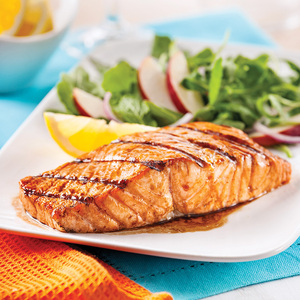
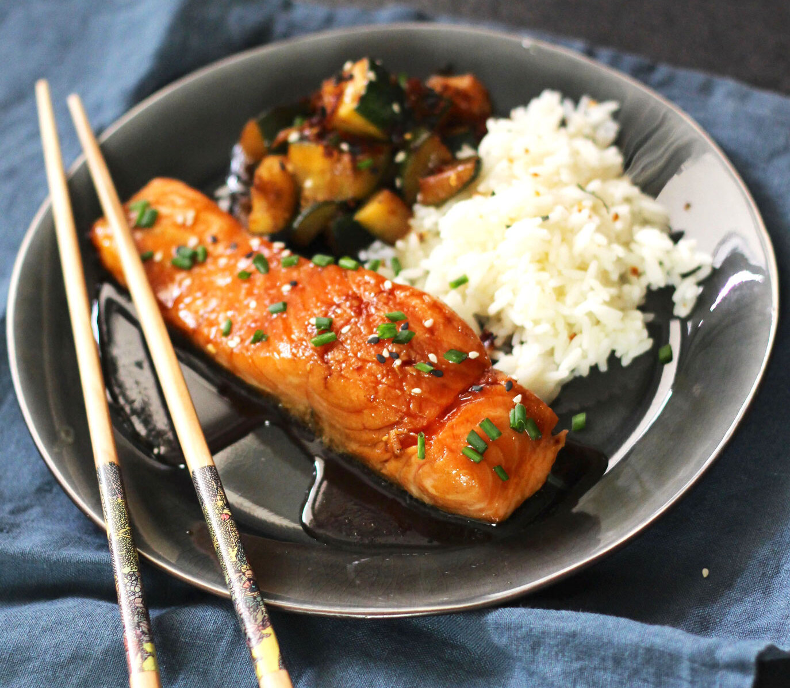
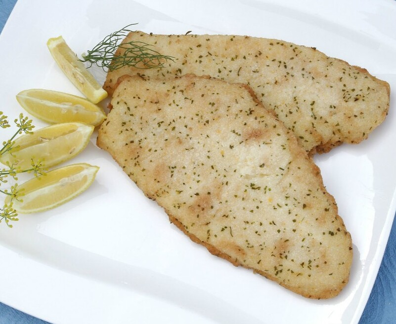
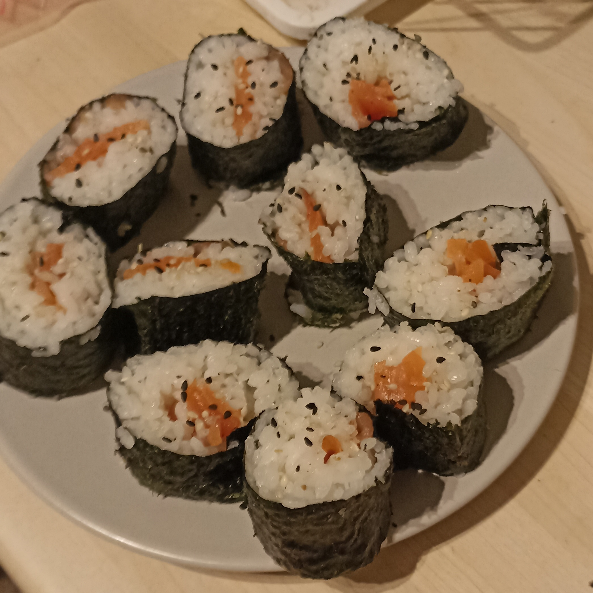

-
Pavés de saumon
Ingrédients
- Pavés de saumon
- 1 cuillères à soupe d'huile d'olive
- Pincées de sel et poivre
Préparation
- - Placer les pavés dans un petit plat
- - Les arroser d'huile d'olive
- - Saler et poivrer
- - Faire cuire au four pendant 20 minutes à 180°C
-
Saumon teriyaki
Ingrédients
- Pavés de saumon d'environ 150g
- 1 cuillère à soupe de graines de sésame
- 1 cuillère à café de gingembre frais râpé
- 100ml de sauce soja
- 75ml de mirin
- 2 cuillères à soupe de sucre semoule
Ingrédients et
préparation de la sauce teriyaki- Rendez-vous sur la page les bases culinaires !
Préparation du poisson
- - Retirer les arêtes et la peau du saumon
- - Mélanger dans un plat le gingembre et la sauce
- - Faire mariner les pavés pendant 30 minutes au frigo
- - Faire chauffer une poêle
- - Égoutter le saumon
- - Le saisir 3 à 4 minutes de chaque côté
- - Essuyer la poêle et faire réduire la marinade 2-3 minutes
- - Remettre le saumon dans la poêle pour l'enrober de sauce
- - Saupoudrer le saumon de graines de sésame
-
Limande du Nord
Ingrédients
- Filets de limande du Nord
- 1 cuillères à soupe d'huile d'olive
- Pincées de sel et poivre
- Jus de citron
Préparation
- - Faire chauffer une poêle avec de l'huile d'olive
- - Mettre le poisson dans la poêle
- - Saler et poivrer
- - Faire cuire pendant 5 à 7 minutes
- - Arroser de jus de citron après la cuisson
-
Makis
Ingrédients
- 200g Riz japonais
- Feuilles de nori
- Crevettes équeuttées ou saumon
- Graines de sésame
Préparation
- - Rendez-vous sur les bases culinaires pour la cuisson du riz !
- - Une fois cuit, l'étaler sur une assiette pour qu'il tiédisse
- - Mettre une feuille de nori à plat sur la natte de bambou
- - Mettre du riz par dessus
- - Mettre des crevettes sur une rangée
- - Rouler bien serré les makis à l'aide de la natte en bambou
- - Découper le rouleau afin d'avoir des makis
- - Une fois en place parsemer de graines de sésame